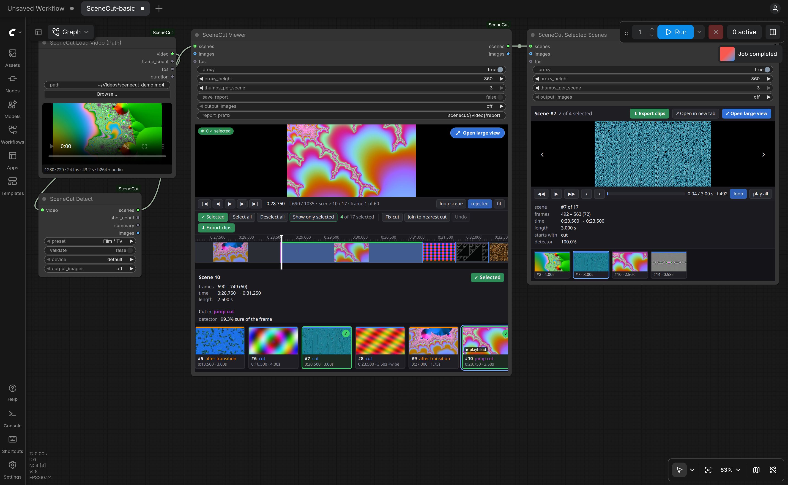

SceneCut finds the shots in a video with OmniShotCut, checks every cut with DINOv3 so flashes and fast pans don't split a shot, and lets you review the result: play it, step frame by frame, move a cut that is a frame off, pick the scenes you want, and export them as clips, cut on the exact frames, with their sound.
This is the SceneCut Viewer, the same code that runs inside the node, on 43 seconds of generated footage (fractals, cellular automata, gradients) with hard cuts, a dissolve, a wipe, a jump cut, a burst of short shots and a fade to black. SceneCut found all 17 shots. Validation is off here: it's tuned for camera footage, and generated patterns all look alike to DINOv3.
Simple nodes with presets do the whole job; advanced nodes split the same pipeline into stages and expose every parameter.
OmniShotCut predicts whole shots and labels transitions (dissolve, wipe, push, slide, zoom, fade, doorway) and jump cuts. Presets for film, music videos, anime, vlogs and sports, in seconds, so they mean the same at any frame rate.
DINOv3 compares the frames on both sides of each cut; camera flashes, strobes, whip pans and a shot split in two are merged back. Every decision keeps its scores, and nothing is thrown away.
Put the playhead on a frame on the wrong side of a cut and press Fix cut: the frames around it are compared with both scenes and the cut moves to where the picture really changes. Or join the frame to the nearest cut by hand.
Select scenes in the viewer and play them one at a time in Selected Scenes, in the node or in its own browser tab, kept in sync. Fixes and selection are saved with the workflow.
One file per scene, cut on the exact frames,
with its sound, plus scenes.json: from the viewer's Export clips button or the Save Scenes node.
H.264 by default; H.265, NVENC, ProRes and lossless FFV1 too.
Every node that outputs scenes can
output their frames as an IMAGE batch (all, or one per scene), and the viewers take images in. Scene lists are
JSON, and the core runs without ComfyUI.
Three steps to your first scene list. You need ComfyUI and, for speed, an NVIDIA GPU; everything also runs on the CPU, slowly.
Clone into custom_nodes, install two small packages and restart ComfyUI.
cd ComfyUI/custom_nodes git clone https://github.com/PedroMarinhoDev/ComfyUI-SceneCut pip install -r ComfyUI-SceneCut/requirements.txt
Templates → custom nodes → SceneCut-basic, or drag the file in. Pick a video with Browse…. The models download on first use and are checked against their SHA-256.
example_workflows/SceneCut-basic.json
Queue the workflow, then review in the viewer: fix cuts, select scenes, and press Export clips. The clips go to your output folder.
output/scenecut/<video>/scenes_00001/ <video>_001.mp4 <video>_002.mp4 … scenes.json

The advanced workflow splits Detect into Detector Loader → Detect (Advanced) → Refine → Validator Loader → Validate (Advanced), each with every parameter.
Exports run in the background with a progress bar; you can keep reviewing meanwhile. Frames are found by their timestamps, so a clip in the middle of a two-hour film is one keyframe seek away, and every clip is checked to hold exactly its scene's frames.
| Codec | File | Encodes on | Use it for |
|---|---|---|---|
| H.264default | .mp4 + AAC | CPU | plays everywhere |
| H.264, NVIDIA GPU | .mp4 + AAC | GPU (NVENC) | the same, faster |
| H.265 / HEVC, 8 or 10-bit | .mp4 + AAC | CPU | smaller files |
| H.265, NVIDIA GPU | .mp4 + AAC | GPU (NVENC) | smaller files, fast |
| ProRes 422 HQ | .mov + PCM | CPU | editing |
| FFV1 | .mkv + FLAC | CPU | lossless, for datasets |
Measured on 2026-10-16 with an RTX 4090 and an Intel Core i9-14900K. "End to end" is the basic workflow: detection, validation, the viewer's preview copy and thumbnails. Export writes every scene with its sound, H.264 at high quality on the CPU, and every clip was checked to hold exactly its scene's frames.
| Video | End to end | Export all scenes, H.264 |
|---|
Seeking by frame number lands on a neighbouring frame in long-GOP video, so a cut found at frame 1200 can be cut out at 1199. SceneCut never does that: every stage counts decoded frames, and the exporter identifies frames by their exact timestamps (falling back to counting from the start when a file's timestamps are unusual).
No. Decoding and encoding, including NVENC, run on PyAV, which ships with ComfyUI.
An ffmpeg binary on the PATH makes detection a little faster; the frames are identical either way.
Film / TV for measured pacing and dissolves, Music video for fast edits and strobes, Anime for held frames and impact flashes, Vlog for jump cuts in one setup, Sports for fast pans and graphic wipes. Film and Music video are tuned on real footage; the others start from reasoned values, and feedback on them is welcome.
Exports and Save Scenes write to output/scenecut/<video
name>/scenes_00001/: the clips, named after the video and the scene number, and scenes.json, the scene
list with your selection and fixes and a table of the clips.
Yes. The scenecut package has no ComfyUI imports, and
scenecut.headless runs the same pipeline as the Detect node from a script.
OmniShotCut (164 MB, MIT) for detection; DINOv3 ViT-L/16 (1.2 GB, DINOv3 License) and SSCD (178 MB, MIT) for validation. Each is checked against its SHA-256.